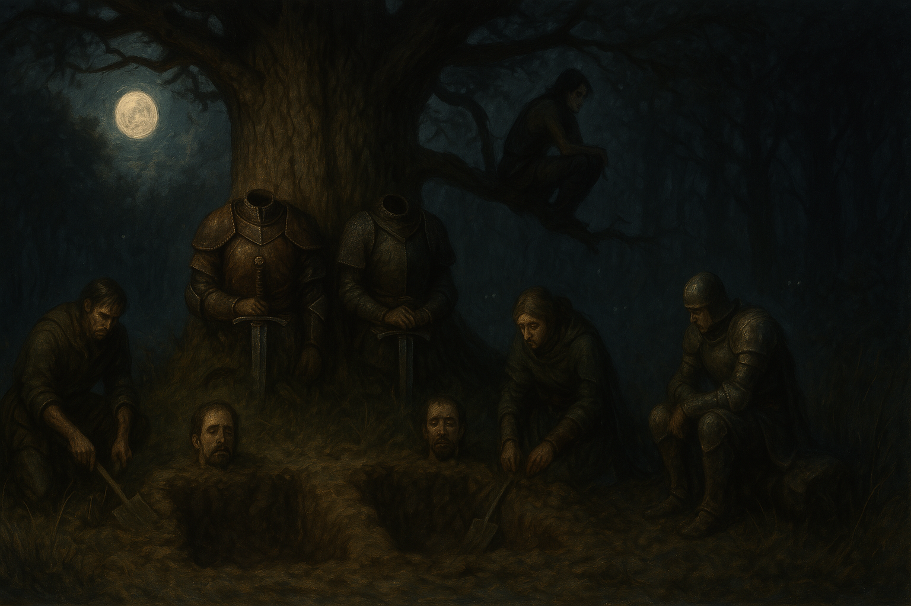

Chapter 5: The Aftermath
The Blooming of Macksohn

The Blooming of Macksohn
15048.11.14
那人喚了 Lemmy，Lemmy 便睜開了雙眼。映入他眼簾的是 Berners 家的傳人 Lance。Lance 將 Lemmy 帶到了另一間看起來像武器房的房間，將他手腳撐開綁住，接著便讓 Lemmy 好好在這過夜休息。
15048.11.15
經歷了比武大會的慘劇，這一夜，台北市議員因為疲憊，而睡得很沉。天亮了，離去的三人：Anedak、Jiaheng，以及 Lemmy 依然沒有回來。
透過魔法，Midori 這次選擇追蹤 Anedak 一直掛在胸前的「神王的指引」。有別於上次搜尋大砍刀，沒能找到，Midori 發現「神王的指引」出現在西北方，麥克嵩城外的一處。經過調查，那裡是個叫朗甫頓（Rumphton）的荒涼城鎮，於是台北市議員便立刻動身前往。
路途中，大家想尋找還有營業的雜貨店進行補給，但街道上所有的店家都被緊緊鎖上，甚至有居民持續從窗戶向外探查，似乎感到非常害怕。
對於無法進行補給，大家感到可惜，只好繼續往城門前行。然而，此時，身後傳來了一陣腳步聲。回頭一看，一個小孩子朝著台北市議員跑了過來，氣喘吁吁的。經過詢問，她自我介紹為 Beau，是個七歲的小女孩。他從鄰居叔叔阿姨口中聽說自己的父母在昨天的比武大會中被殺死，而便是「台北市議員」這群人將競技場中的惡魔擊敗，才拯救了麥克嵩。Beau 從口袋中掏出了台北市議員的懸賞單，表示自己現在無依無靠，希望可以加入台北市議員。同時，她原地開始拳打腳踢，想表現出自己是個即戰力。
台北市議員的想法分歧，由於 Beau 口氣不小，對幾位冒險者也不太禮貌，甚至得罪了 Paladin 爵士，包含 Paladin、YHWH 等人對於 Beau 的加入十分不認同，唯有同為孤兒的 Midori 和剛加入且心地善良的 Siri 希望能納 Beau 為同伴。討論過後，Midori 和 Siri 決定騎乘 Midori 召喚的獒犬，載著 Beau 回到 Patton’s，看看 Mr. Moon 和紫羅蘭等人是否能協助照顧 Beau。
回到 Patton’s，Mr. Moon 表示自己無法協助照顧 Beau；紫羅蘭則表示比起他照顧 Beau，讓 Beau 在路上流浪可能生存的還要更好。另外，紫羅蘭也表示他預計會和弗列里夫婦一同前往寇林菲爾德，不繼續待在麥克嵩了。
接著，紫羅蘭表示剛剛有個王宮的信差來找受封為爵士的 Paladin，將他要求王宮為他準備的地圖帶來了，於是紫羅蘭便將地圖交付給 Midori。
在離開 Patton’s 前，一個人按住了 Midori 的肩。Midori 回頭，是 Roline。聽聞大家要前往朗甫頓，先行離開麥克嵩後，Roline 表示自己會想念 Ron，也計劃每天為他寫信。同時 Roline 取出了一段黃絲帶，請 Midori 將它交給 Ron。
離開 Patton’s 後，Midori 和 Siri 載著 Beau 回到大家分散的地方。看見 Beau 依然跟著兩人，台北市議員們十分驚訝。Midori 表示 Mr. Moon 和紫羅蘭都無法收養他，於是計畫帶著 Beau，將他帶回過去自己成長的津菈教護盾大教堂生活。
有些成員對這個做法不敢苟同，其中 Paladin 爵士十分不開心，對 Beau 口出惡言，對此，Siri 十分不滿，擒抱住 Paladin，要求他道歉，但 Paladin 完全沒有這個意思，甚至要求衛兵將 Siri 捆綁住，限制他的行動。
收到了 Roline 的黃絲帶，Ron 將它綁在自己的手腕上，作為紀念。
另一方面，Lemmy 醒來後，發現 Lance 站在他身前。Lance 帶了幾名壯碩的僕人，按壓住 Lemmy 的四肢，便開始拷問。Lemmy 謊稱是 Paladin 爵士派遣他來暗殺 Berners 家族。Lance 將胸前的一顆黑色且散發出紫色光芒的珠寶沒入 Lemmy 的胸前，Lemmy 便感到如電流般的刺痛。Lance 要 Lemmy 每晚睡前將當日的行動全數回報，而且不能做出任何對 Berners 家有害的行為，也不能將今天發生的任何事透露，否則他得付出極大的代價。
Lemmy 點點頭承諾，並許了個願，希望能將他死去的朋友 Jiaheng 刺青刺在自己身體少數沒有刺青的地方：他的胯下左側。經過一段時間，Lance 找來了一個看起來十分害怕的刺青師，為 Lemmy 刺上了 Jiaheng 的臉（並不像），以及一個 J 字。最後，Lance 將 Lemmy 放了出去，並再次警告他，要他記得他答應的事。
追趕上了走到城門口的台北市議員，Lemmy 向大家說昨晚三人離開 Patton’s 後，遭到群聚的惡徒圍毆，只有他逃了出來，Jiaheng 和 Anedak 都死了。同時他也把自己最新的 Jiaheng 刺青秀給大家看。
另一邊，城門外，一個穿著重甲的妖精女子和一個高大的半獸人女性向台北市議員攀談。妖精女子表示他叫 Drayer，是 Jiaheng 的青梅竹馬，要來尋找 Jiaheng 的蹤跡。聽聞了 Jiaheng 的死訊，他便決定加入台北市議員，為 Jiaheng 復仇。另一位則是 Drayer 在冒險途中認識的夥伴，Sugalu。
時間接近中午，眾人肚子餓了，便各自吃了不同的午餐。
為了找到 Jiaheng，Drayer 也使用了定位術，找到 Jiaheng 平時配戴的徽記在西北方。沿著城牆，眾人朝著西北方前進。在路程中，Midori 和 YHWH 因為對 Lemmy 說明昨晚事件的說詞頗有疑慮，對他更加嚴肅的詢問。在不透露過多細節的前提下，Lemmy 調整說法，解釋 Jiaheng 和 Anedak 發生的事。
距離日落時間不久了，大家經過一處，左手邊開始出現聚落，而且有三五個居民在活動著。Drayer 估算，大約再走一個小時就能到他感應到徽記的位置了。
遠方視野內出現了一棵大樹。走近後，樹幹的左右兩側各有一具斷頭的軀體。左邊的是 Jiaheng 的身體，右手將 Anedak 的頭按置在地上；右邊的是 Anedak 的身體，左手將 Jiaheng 的頭按置在地上。兩人脖子的切痕都十分平整，像是特別小心處理過的。同時兩人身上都穿著生前的衣著，也配戴著平常使用的武器。
強忍著悲傷，大家紛紛拿起可以使用的工具或武器，在兩個軀體前挖起地洞。Samael 坐在樹前休息，而 Ron 則坐著祝禱，念念有詞。Lemmy 爬到了樹上，朝著前方開始出現的森林監視。夜色降臨，森林內點起了數雙明亮的眼睛。Lemmy 回想起幼年時自己闖入了這片 Mason 森林，也曾看見過這些眼睛，但比起這些眼睛，他想起更多的，卻是家人和麥克嵩居民尋獲他的身影。
經過一段時間後，地洞終於挖完了。大家分別將 Jiaheng 和 Lemmy 的軀體和對應的頭放入地洞，並開始填土。過程中，森林內的那些眼睛並沒有繼續向前移動。
在兩人的墓被好好填滿後，冒險者們紛紛上前致意，便回頭往原來的路了。
到了稍早看見聚落的位置，大家紛紛討論著是否該進入聚落，還是在城牆邊紮營，Lemmy 和 Siri 兩人決定先去探查，其他人則在原地等待並紮營。花了一段時間，兩人走在朗甫頓的路上，鬆散的民宅都暗了，只有少數比較大的屋子還亮著。Lemmy 看到了其中一間，似乎是個酒館，便踏入了酒館，進行觀察。同時，Siri 在窗外緊緊看著 Lemmy 的行為。
在 Lemmy 出來後，簡單和 Siri 說明，表示似乎有不少麥克嵩人移居到了朗甫頓，但旅社還是很多位子。兩人決定回到原本大家停留的地方討論。
在城牆邊，Ron 搭好了帳篷，其他人則在牆邊休息。經過 Lemmy 和 Siri 的說明，Ron 以外的大家決定進朗甫頓晃晃。進入了熱鬧的酒館內，大家紛紛點了特餐和啤酒，並討論起了大家的未來。
經過 Midori 的帶領，包含 Midori、Beau、Siri、Samael、Lemmy 和 YHWH（以及被 Midori 下決定的 Ron）決定先回一趟麥克嵩，然後朝著 Midori 的家鄉方努爾市前進，目標是將 Beau 帶到 Midori 成長的護盾大教堂內收養；Paladin 爵士、Sugalu 和 Drayer 則決定朝著 Sebano 去尋找關於拉索斯教更多的線索，以爲 Jiaheng 和 Anedak 復仇。
隨著酒館老闆說明只剩下三間單人房，Paladin 爵士、Sugalu 和 Drayer 以外的其他人則向他們道別，聽著老闆「推薦」的旅社，Tok Tok（實際上叫 Wood Man）前進。Midori 和 Lemmy 住了單人房，其他人則共享一間八人房。
睡前，Lemmy 簡單回報了今日冒險團的行蹤和規劃後，便入睡了。
So close, so close……
— 夜裡的氣音聲
夢中，Paladin 爵士和 Sugalu 聽見了清晰的氣音聲，訴說著「So close, so close……」。